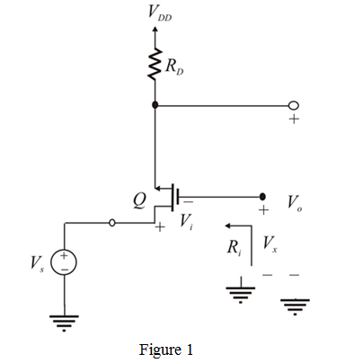
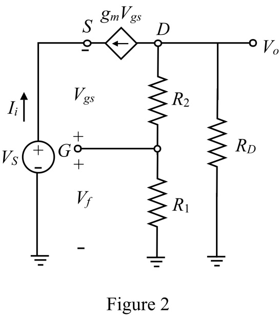
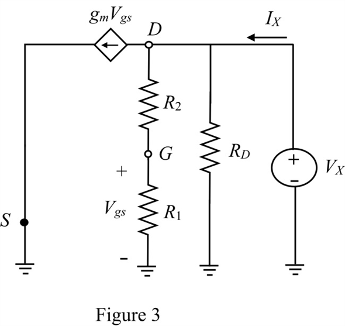

(a)
Refer to the circuit diagram in Figure 10.7(c) in the textbook.
From the figure, input voltage is,
…… (1)
Neglect output resistance  to find output voltage
to find output voltage .
.
..…. (2)
Open-loop gain is,
Substitute for  and for
and for  in the equation.
in the equation.
(a)
Refer to the circuit diagram in Figure 10.7(c) in the textbook.
From the figure, input voltage is,
…… (1)
Neglect output resistance to find output voltage.
..…. (2)
Open-loop gain is,
Substitute for and for in the equation.
Define feedback factor.
Use voltage division rule to find feedback voltage.
Substitute  for
for  in the equation.
in the equation.
Thus, feedback factor is .
is .
The amount of feedback is,
Thus, feedback factor  is .
is .
(b)
Remove resistors  and (with no feed-back) then connect the gate of
and (with no feed-back) then connect the gate of  to a constant dc voltage.
to a constant dc voltage.

Write the expression for input resistance by inspection.
Input resistance
Similarly, output resistance is,
Draw the equivalent circuit diagram.

Current is the input current drawn from source voltage .
.
Output voltage  is,
is,
Apply voltage division rule to find  .
.
Substitute for  .
.
Define input resistance (with feedback) is,

Apply kirchoff’s voltage law around the input loop.
Substitute for  and for
and for  .
.
Thus, input resistance, is .
Recall input resistance (with feedback).
Here input resistance  (without feedback) is,
(without feedback) is,
Feedback amount,  is .
is .
Thus, input impedance increased by a factor .
.
To obtain output resistance (with feedback) de-active input source and apply test source at the output terminal.

Apply kirchoff’s current law at drain terminal.
Substitute for  in the equation.
in the equation.
Define output resistance (with feedback).
Thus,
Rearrange the terms.
Since implies that,
So,
Recall output resistance (with feedback).
Here output resistance  (without feedback) is,
(without feedback) is,
Feedback amount,  is .
is .
Thus, output impedance is reduced by a factor of .
.